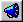

Directing mode is used to place figures, lights, and the camera in to a scene
and rotate or translate them over time.
Modeling, Bones, Muscle, and Skeletal modes can also be accessed from
Directing mode by clicking the appropriate button.
Related Help Topics:
Directing
Bones Mode
Muscle Mode
Skeletal Mode